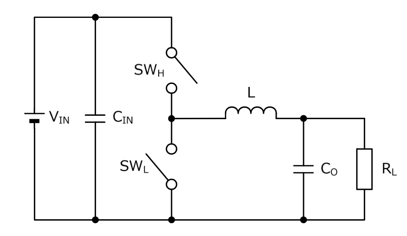
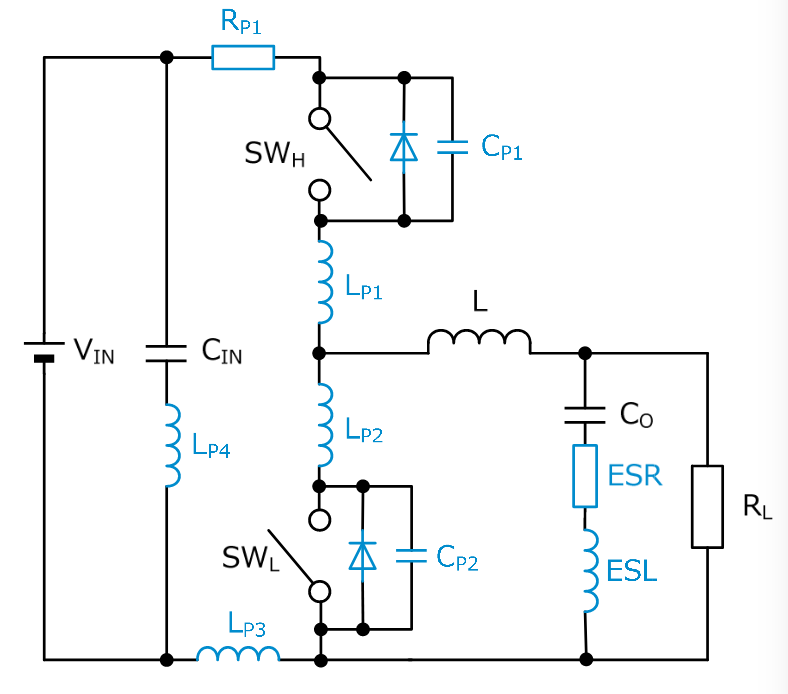
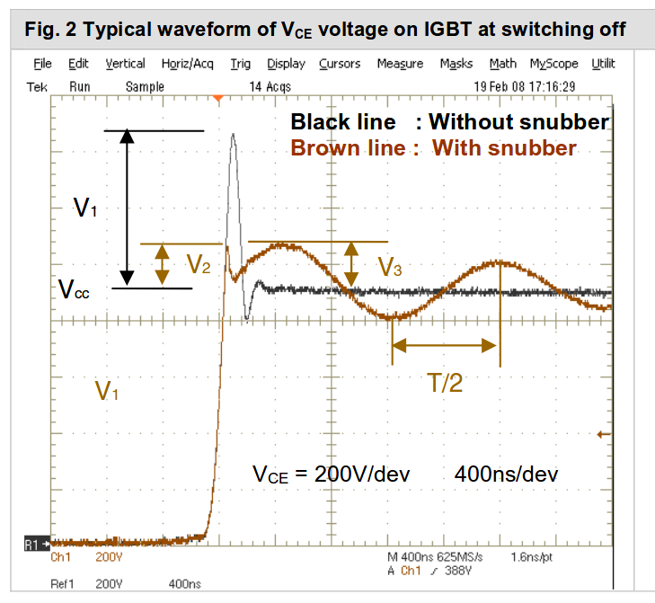
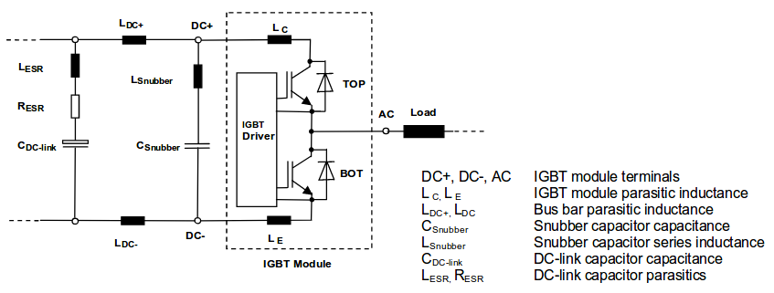
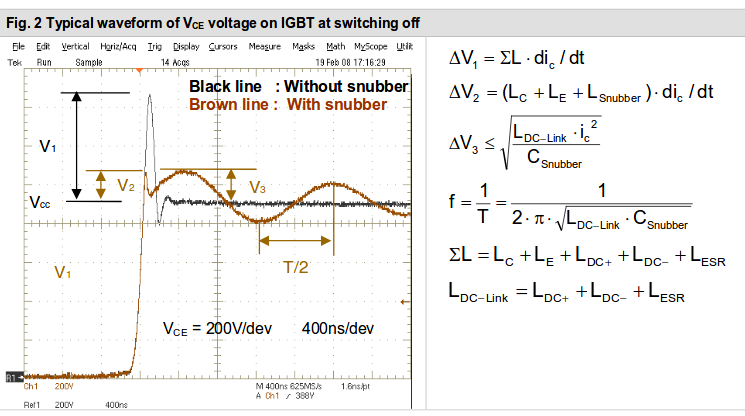

class: center, middle # EE-463 STATIC POWER CONVERSION-I # Snubbers and Protection Circuits ## Ozan Keysan ## [keysan.me](http://keysan.me) ### Office: C-113 <span class="meta">•</span> Tel: 210 7586 --- # What is a Snubber? -- <img src="https://images-na.ssl-images-amazon.com/images/I/61kukXLm4PL._SL1100_.jpg" alt="Drawing" style="width: 500px;"/> --- # What is a Snubber? <img src="https://images-na.ssl-images-amazon.com/images/I/71de4v85pVL._SL1500_.jpg" alt="Drawing" style="width: 500px;"/> --- ## Why do we need snubbers in power electronics? -- - ## Limit voltage transients -- - ## Limit dv/dt to protect devices and prevent accidental turn-on -- - ## Reduction of switching losses -- - ## Reduce EMI -- - ## Prevent arcing in mechanical relays etc. #### [More info](http://www.completepowerelectronics.com/why-snubber-circuit-used-in-power-electronics/) --- # Reasons for Transients -- ## Mostly due to stray/parasitic inductances -- - ## Device inductance -- - ## PCB or line inductance --- # RC Snubber -- <img src="http://www.wikizero.org/index.php?q=aHR0cHM6Ly91cGxvYWQud2lraW1lZGlhLm9yZy93aWtpcGVkaWEvY29tbW9ucy84Lzg4L1JDX1NudWJiZXJfJTI4TW9kZWwlMjkuUE5H" alt="Drawing" style="width: 400px;"/> --- # RC Snubber -- <img src="http://www.wikizero.org/index.php?q=aHR0cHM6Ly91cGxvYWQud2lraW1lZGlhLm9yZy93aWtpcGVkaWEvY29tbW9ucy90aHVtYi9lL2VjL1NudWJiZXIuanBnLzgwMHB4LVNudWJiZXIuanBn" alt="Drawing" style="width: 750px;"/> --- # Reasons to Use Snubber -- ## Common Parasitic Components -- ### Example: [Synchronous Buck](http://www.electronicdesign.com/analog/how-control-emi-synchronous-buck-converters)  --- # Reasons to Use Snubber ## Synchronous Buck with Parasitic Components  --- ## Voltage Waveforms (For [IGBT](https://www.semikron.com/dl/service-support/downloads/download/semikron-application-note-igbt-peak-voltage-measurement-and-snubber-capacitor-specification-en-2008-03-17-rev-00/))  --- # Equivalent Circuit for IGBT  --- # Snubber Equations  --- # RC Snubber Applications Notes -- - ## [Designing RC Snubber Networks](https://www.alliedelec.com/images/Products/mkt/pb/cornelldubilier/pdfs/snubberguide.pdf) - ## [Calculate R-C Snubber in 7 Steps](https://e2e.ti.com/blogs_/b/powerhouse/archive/2016/05/05/calculate-an-r-c-snubber-in-seven-steps) - ## [Snubber Circuit for Buck Converter](http://rohmfs.rohm.com/en/products/databook/applinote/ic/power/switching_regulator/buck_snubber_app-e.pdf) - ## [IGBT Snubber Capacitors](https://www.semikron.com/dl/service-support/downloads/download/semikron-application-note-igbt-peak-voltage-measurement-and-snubber-capacitor-specification-en-2008-03-17-rev-00/) --- # Diode Snubbers -- ## Freeewheeling diode is a very basic snubber <img src="https://gordon831.files.wordpress.com/2013/08/freewheeldiode1.png" alt="Drawing" style="width: 750px;"/> --- # Diode Snubbers: RCD Snubber -- ### Flyback Converter (Wait until EE464) with RCD Snubber -- <img src="http://4.bp.blogspot.com/_ycHwJEosotY/SbW-Bt2C4kI/AAAAAAAAAZQ/ycwGPNpjoYo/s200/RCD+snubber+1.JPG" alt="Drawing" style="width: 400px;"/> #### Absorbs the current in the leakage inductor #### [RCD Application Note](https://www.fairchildsemi.com/application-notes/AN/AN-4147.pdf), [RCD Design](http://basicelectronic.blogspot.com.tr/2009/03/mosfet-rcd-snubber-circuit-design.html) --- ## You can download this presentation from: [keysan.me/ee463](http://keysan.me/ee463)